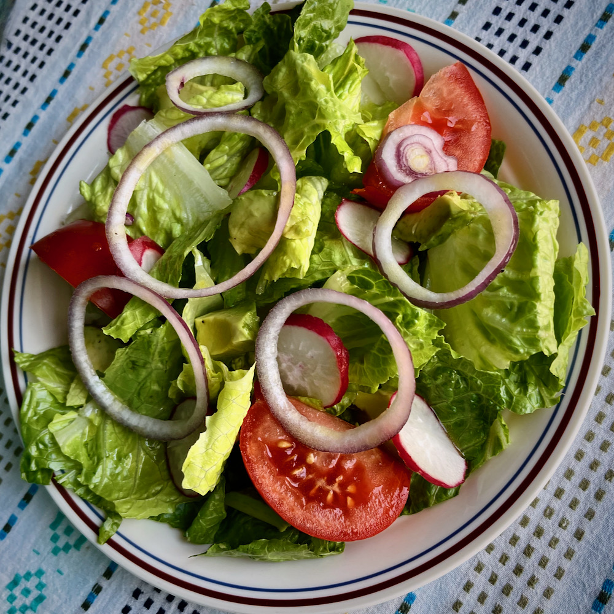

Easy Cuban Salad

Description
Ingredients
- ½ cup extra virgin olive oil
- ¼ cup fresh lemon juice
- 2 tablespoons fresh orange juice
- 2 tablespoons fresh lime juice
- 1 teaspoon minced garlic
- 1 teaspoon salt, or to taste
- ¼ teaspoon ground black pepper
- 1 head romaine lettuce - rinsed, dried and chopped
- 2 medium tomatoes, cut into 8 wedges
- 8 medium radishes, thinly sliced
- 1 medium red onion, thinly sliced
- 1 avocado - peeled, pitted, and chopped
Steps
-
Combine olive oil, lemon juice, orange juice, lime juice, minced garlic, salt, and pepper in a 1-pint container or jar with tight-fitting lid. Tightly close the lid and shake until the ingredients are well blended. Refrigerate until ready to toss with the salad, or up to 3 days.
-
Combine chopped romaine, tomato wedges, sliced radishes, sliced red onion, and chopped avocado in a large bowl. Add as much dressing as you like, and toss all ingredients. Refrigerate unused salad dressing.
-
Serve dressed, tossed salads on individual salad plates.